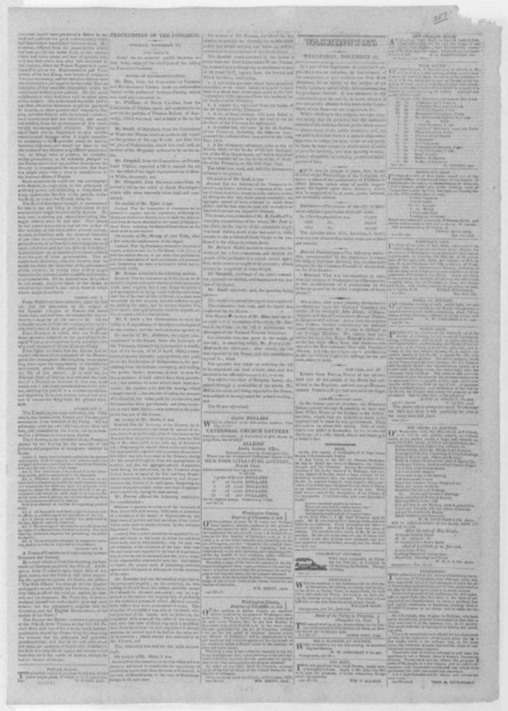

Invasion, Occupation, and IndependenceInvasión, ocupación e independencia
Before the Flag ChangedAntes de que cambiara la bandera
The record opens on a single page: the Daily National Intelligencer of November 29, 1820, and the island appears on it only in passing. Letters from Port-au-Prince dated November 1 report that all the people of the North had submitted to the Republic and that only one government now existed; President Boyer, the item adds, had arrived at the Cape. Nothing on the page concerns the Spanish east directly. The east enters only as the silent remainder of an island the paper treats as one story, told from the west.
El registro se abre con una sola página: el Daily National Intelligencer del 29 de noviembre de 1820, y la isla aparece en ella solo de pasada. Cartas de Puerto Príncipe fechadas el 1 de noviembre informan de que todo el pueblo del Norte se había sometido a la República y de que ya existía un solo gobierno; el presidente Boyer, añade la nota, había llegado al Cabo. Nada en la página concierne directamente al este español. El este entra solo como el resto silencioso de una isla que el periódico trata como una sola historia, contada desde el oeste.
The page's longest island item looks backward. An obituary for Duncan McIntosh, who died at Aux Cayes, praises him as a hero of humanity for risking his life during the revolutionary troubles of 1793 in St. Domingo to save a large number of inhabitants, in the paper's words, from "the remorseless fury of the blacks." A generation after 1793, an American paper still read the island through that revolution: a new single government in the west reported in two lines, and the violence of the 1790s remembered in verse. What the east was living, this page does not say.
La nota isleña más larga de la página mira hacia atrás. Un obituario de Duncan McIntosh, fallecido en Aux Cayes, lo elogia como héroe de la humanidad por haber arriesgado su vida durante los disturbios revolucionarios de 1793 en Santo Domingo para salvar a un gran número de habitantes, en palabras del periódico, de «la furia despiadada de los negros». Una generación después de 1793, un periódico estadounidense seguía leyendo la isla a través de aquella revolución: un nuevo gobierno único en el oeste informado en dos líneas, y la violencia de los años 1790 recordada en verso. Lo que el este estaba viviendo, esta página no lo dice.
An Occupation Reported as AdministrationUna ocupación contada como administración
When Boyer's government took Santo Domingo in February 1822, the American items gathered here reported it in the calm language of administration. The Richmond Enquirer of April 2, 1822 printed Boyer's proclamation of February 9, declaring that the Haitian flag now displayed itself on every point of the island. The same issue reported that the whole enslaved population of Spanish Santo Domingo had been emancipated, in perfect conformity, the paper said, with the constitution of Haiti: a revolution in the east's legal order filed as a consequence of a change of government. Around those facts the paper placed commerce and doubt: the tonnage duty on American vessels doubled, and a reported French expedition against Samaná was doubted in the same columns.
Cuando el gobierno de Boyer tomó Santo Domingo en febrero de 1822, las notas estadounidenses aquí reunidas lo contaron con el lenguaje tranquilo de la administración. El Richmond Enquirer del 2 de abril de 1822 imprimió la proclama de Boyer del 9 de febrero, que declaraba que la bandera haitiana ya se desplegaba en todos los puntos de la isla. El mismo número informó de que toda la población esclavizada del Santo Domingo español había sido emancipada, en perfecta conformidad, decía el periódico, con la Constitución de Haití: una revolución en el orden jurídico del este archivada como consecuencia de un cambio de gobierno. Alrededor de esos hechos el periódico colocó comercio y duda: el derecho de tonelaje de los buques estadounidenses se duplicó, y una expedición francesa contra Samaná de la que se había informado fue puesta en duda en las mismas columnas.
The Occupation Reaches American ShoresLa ocupación llega a las costas estadounidenses
Read from the east, these were the first acts of an occupation: a foreign flag over every point of the island, a foreign constitution imposed as its law. In 1824 the occupation reached into American life directly: Boyer's agent Granville arrived with instructions to bring 6,000 free Black emigrants to the island that year, 1,000 to Santo Domingo and 200 to Samaná, passage paid and citizenship rights after a year's residence.
Leídas desde el este, no eran notas administrativas sino los primeros actos de una ocupación: una bandera extranjera sobre todos los puntos de la isla, una constitución extranjera impuesta como ley del territorio. En 1824 la ocupación tocó directamente la vida estadounidense: el agente de Boyer, Granville, llegó con instrucciones de traer 6.000 emigrantes negros libres a la isla ese año, 1.000 de ellos a Santo Domingo y 200 a Samaná, con el pasaje pagado y los derechos de ciudadanos tras un año de residencia.
What the Record Lets Fall SilentLo que el registro deja en silencio
After that, the record thins: an anecdote of a fighting parson who had traded in St. Domingo, a missionary report naming the island of Hayti a new field, and a Baltimore advertisement offering St. Domingo leaf tobacco. The occupation Dominicans lived for two decades survives in these pages mostly in its first spring.
Después, el registro estadounidense se adelgaza: una anécdota de un párroco peleador que había comerciado en Santo Domingo, un informe misionero que nombra la isla de Haití como un campo nuevo, y un anuncio de Baltimore que ofrece tabaco en rama de Santo Domingo. La ocupación que los dominicanos vivieron durante dos décadas sobrevive en estas páginas sobre todo en su primera primavera.
PlatesLáminas

In the former part of October, the Delaware Indians passed through
Key articlesArtículos clave
Arrivals from Santo Domingo bring accounts of the whole of the slave population of Spanish Santo Domingo having been emancipatedLas llegadas procedentes de Santo Domingo traen la noticia de que toda la población esclavizada del Santo Domingo español ha sido emancipada
PassagePasaje
he [illegible] able to communicate Something [illegible] on Expenditures on the Public Buildings, Mr. Nelson of [illegible], from the Committee [illegible] of Alabama, when the que…
St. Domingo.Santo Domingo.
PassagePasaje
which lately cut out the two Spanish schooners [illegible] St. Domingo. — The Curacao Courant of the [illegible] of March, [illegible] [illegible] an extract of a letter from St. P…
Dry Goods, [illegible] In some remarks under this head [illegible] transportation of [illegible] colored people…Mercancías secas, [ilegible] En algunos comentarios bajo este encabezado [ilegible] transporte de [ilegible] personas de color…
PassagePasaje
Dry Goods, [illegible] In some remarks under this head [illegible] transportation of [illegible] colored people [illegible] small bridges on the highways on either side of the rive…
In the former part of October, the Delaware Indians passed throughEn la primera parte de octubre, los indios Delaware pasaron por
Letters from Port au Prince of the 1st inst. state that all the people of the North had submitted to the Republic, and but one government existed. President Boyer had arrived at th…
ErasEras · The era's articlesLos artículos de la era · On the timelineEn la cronología